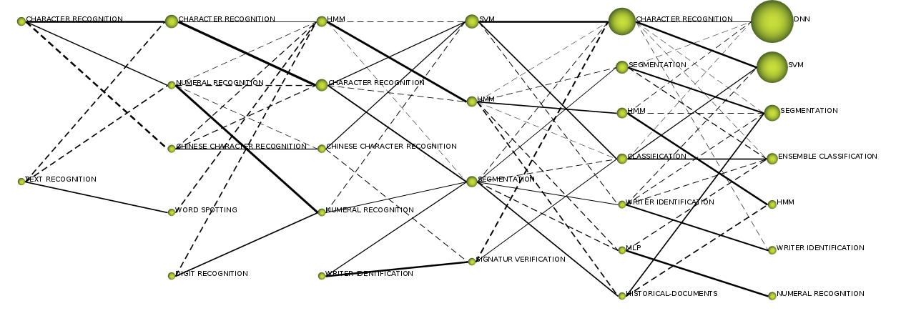
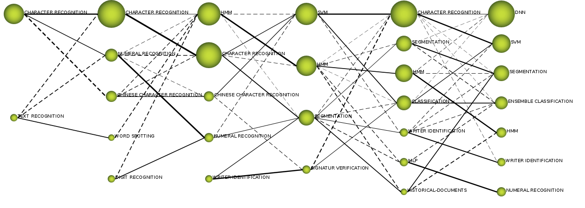
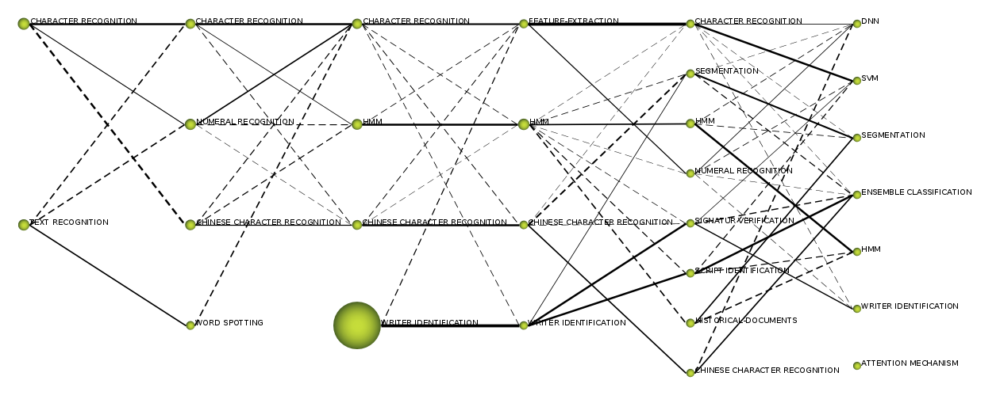
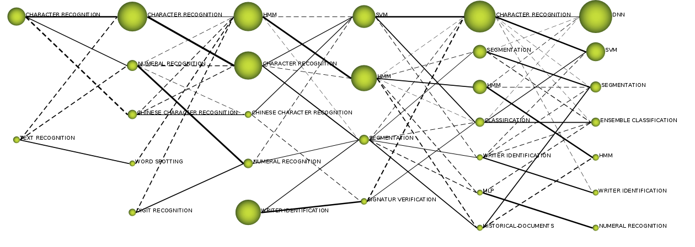
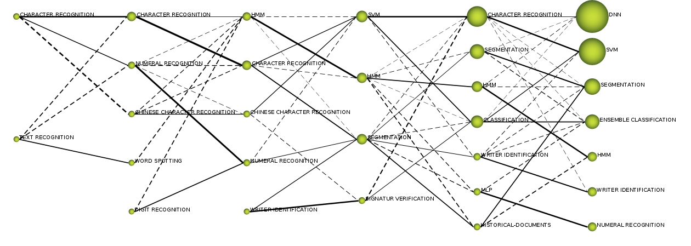
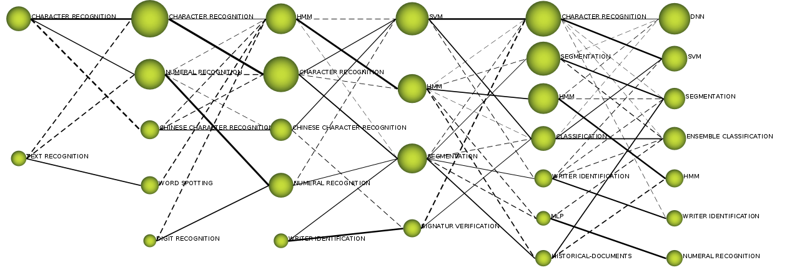
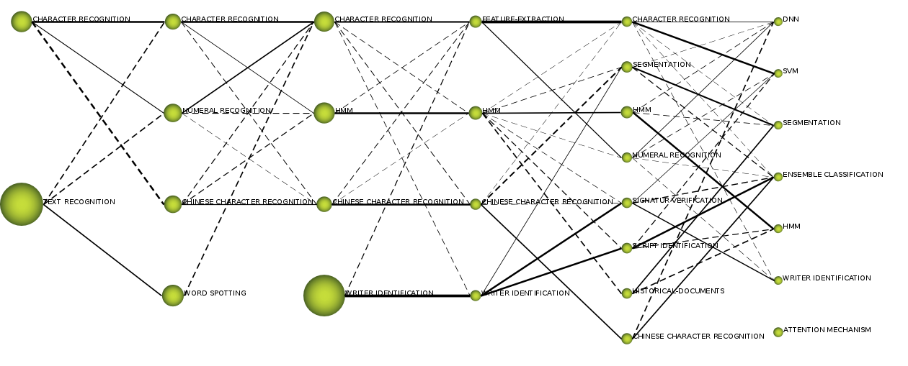
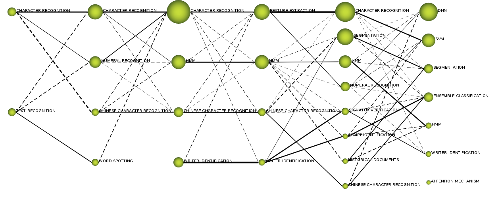

Victoria Ruiz, Ruben Heradio, Ernesto Aranda-Escolastico, Angel Sanchez, and Jose F. Velez
| Performance measure | Evolution map | Pajek file |
| coreDocuments-documentsCount |  | Pakej file |
| coreDocuments-hIndex |  | Pakej file |
| coreDocuments-averageCitations |  | Pakej file |
| coreDocuments-sumCitations |  | Pakej file |
| unionDocuments-documentsCount |  | Pakej file |
| unionDocuments-hIndex |  | Pakej file |
| unionDocuments-averageCitations |  | Pakej file |
| unionDocuments-sumCitations |  | Pakej file |